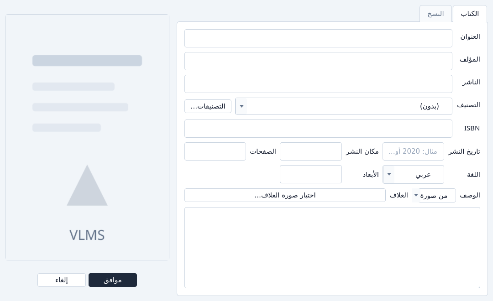
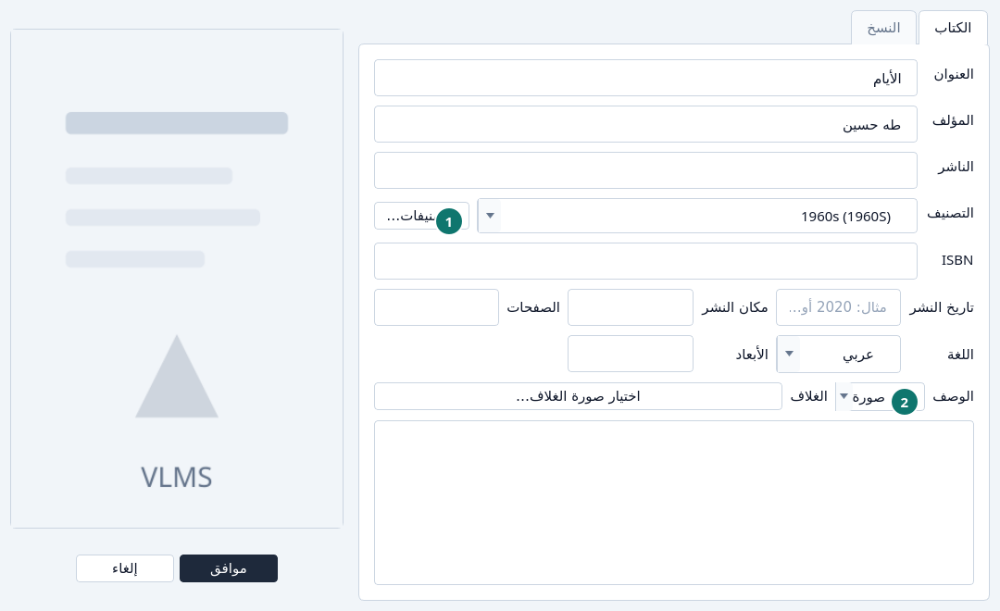
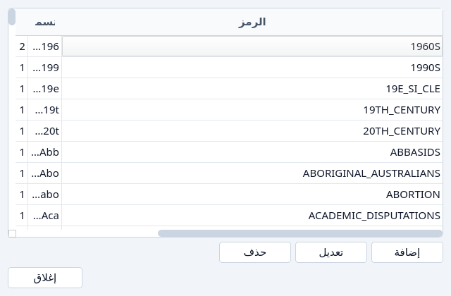
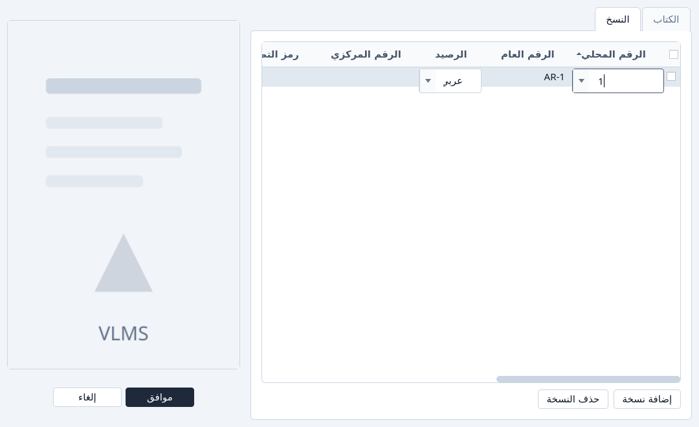

إضافة كتاب
إضافة عنوان ونسخه وغلاف.
إضافة عنوان
اضغط إضافة كتاب.
تفتح النافذة على تبويب الكتاب. العنوان واللغة مطلوبان. بقية الحقول يمكن أن تنتظر.

إضافة كتاب، كما تُفتح. املأ تبويب الكتاب.
اكتب العنوان والمؤلف. اختر اللغة. اختر تصنيفاً، أو اترك (بدون).

عنوان ومؤلف ولغة وتصنيف. - التصنيفات… تفتح قائمة التصنيفات دون مغادرة الكتاب.
- من صورة تقرأ صورة واضحة وتستطيع ملء العنوان والمؤلف والوصف. تحتاج صورة مقروءة. قد تكون غير متاحة على هذا الحاسوب.
أضف تصنيفاً إذا لم يكن في القائمة.
التصنيفات… تعرض كل تصنيف، مع إضافة وتعديل وحذف. أغلقها بـإغلاق، ثم اختر التصنيف على الكتاب.

قائمة التصنيفات. اختر غلافاً إذا كان عندك.
اختيار صورة الغلاف… في سطر الغلاف. الصورة تُحفظ مع العنوان.
افتح تبويب النسخ.
إضافة نسخة تضيف سطراً. العنوان الجديد يحتاج نسخة واحدة على الأقل. السطر يأخذ الرقم المحلي التالي إلا إذا اخترت غيره. انظر إعادة استعمال رقم محلي.

تبويب النسخ بسطر جديد. 
محرّر الرقم المحلي: الرقم التالي، ثم الأرقام الحرة. اضغط موافق.
إلغاء يترك النافذة. لا شيء يُحفظ قبل موافق.


إذا تعذّر
- العنوان فارغ، أو اللغة ناقصة. النافذة تبقى مفتوحة وتسمّي الحقل.
- الرقم المحلي مستعمل لنسخة أخرى من الرصيد نفسه. اختر رقماً آخر، أو خذ رقماً حراً من القائمة.
- الرقم كان محجوزاً لنسخة ما زالت تُحرَّر. احفظ ذلك الكتاب أو ألغه أولاً.